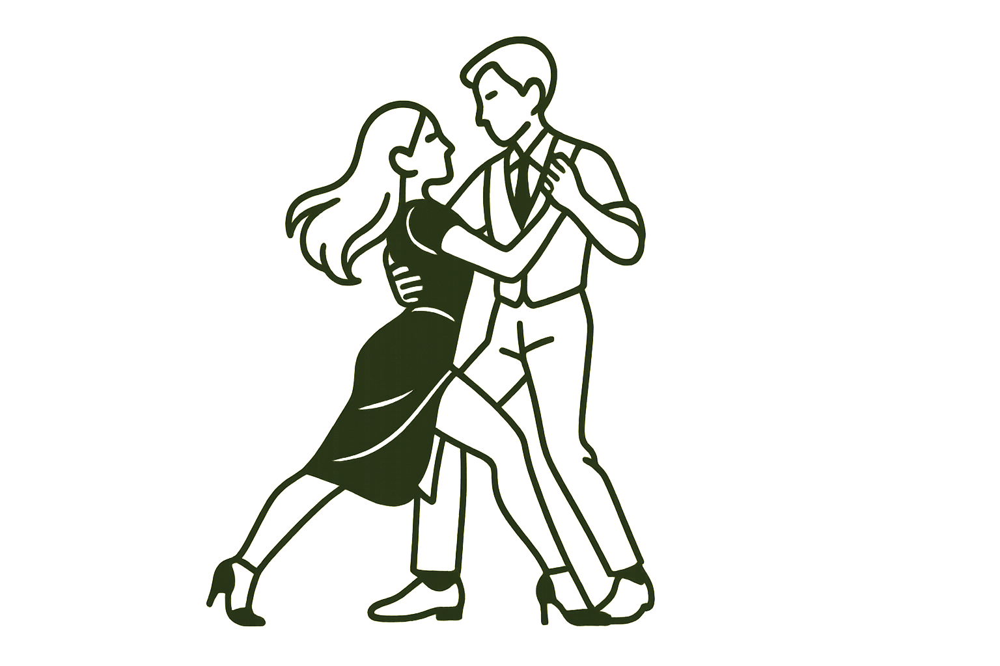

Tango Argentino
Aprende la técnica clásica y la elegancia del tango porteño.
Nivel: Principiante / Intermedio
Días: Lunes y Miércoles
Hora: 18:00 – 19:30

Clases dinámicas para todos los niveles.
Aprende la técnica clásica y la elegancia del tango porteño.
Nivel: Principiante / Intermedio
Días: Lunes y Miércoles
Hora: 18:00 – 19:30